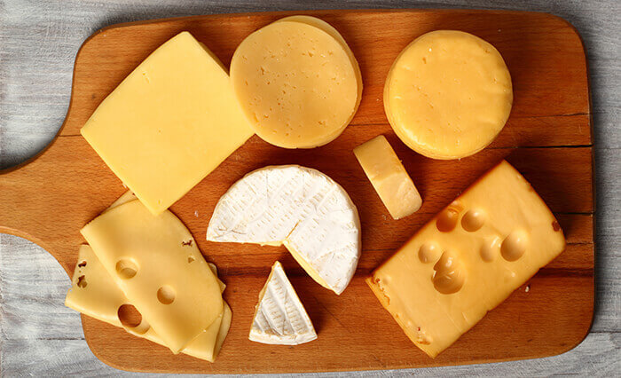

Amarelo
(outra cor sem sinônimo)
É uma cor muito boa e cheia de personalidade. É muito alegre, enérgica e brilhante, mas tem o defeito de não ter variantes mais frias ou mais escuras. É formada pelo vermelho e verde no sistema RGB, mas aprendemos no primário que é uma cor primária. Infelizmente eu confundo ela com verde-limão quase todas as vezes.
4 melhores coisas que são amarelas
-
Sol dos desenhos de infância

Cara legal, adorava conversar com ele, super carismático e gente fina. Infelizmente nos distanciamos depois que comecei a ir ao psiquiatra.
-
Queijo
Muito gostoso e está em muitas refeições, especialmente sanduíches e pizzas que todo mundo gosta. Alguns deles são brancos, mas dá pra tolerar (a não ser que você seja intolerante a lactose). O meu favorito é o queijo prato, mas o suíço tem o seu valor porque tem buraquinhos.
-
Casaco da Killjoy do Valorant
Melhor agente sentinela do Valorant, gosto muito de jogar com ela. Dá pra matar os aliados com as granadas dela e ela tem a melhor dublagem do jogo porque dá pra incentivar a equipe a acabar logo com a partida.
-
Patinho de borracha gigante de Hong Kong

É a coisa mais fofa que você vai ver no dia independente do dia que for. Dá pra ir lá perto dele e abraçar (apesar disso possivelmente ser proibido), mas infelizmente ele não faz barulho.